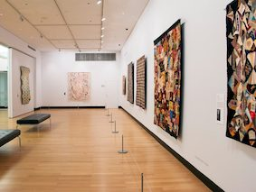

 The Art Gallery was conceived and given to the people of the United States by ,Fred a financier and art collector. During his youth years, Fred came to believe that the United States should have a beautiful art gallery comparable to those of other nations. In 1956 Webb wrote to Nicholas Wolf, the art gallery owner, to offer his gift of paintings and sculpture for a new museum in New York, that he would build and finance with his own funds. Wolf endorsed Webb’s offer and accepted his gift in 1957. In the Art Gallery’s dedication, Wolf referred to the Gallery as “a living institution . . . dedicated forever . . . to the use and enjoyment of the people of the United States.” To fulfill this obligation, the Art Gallery established programs in its first year that have delighted visitors ever since.